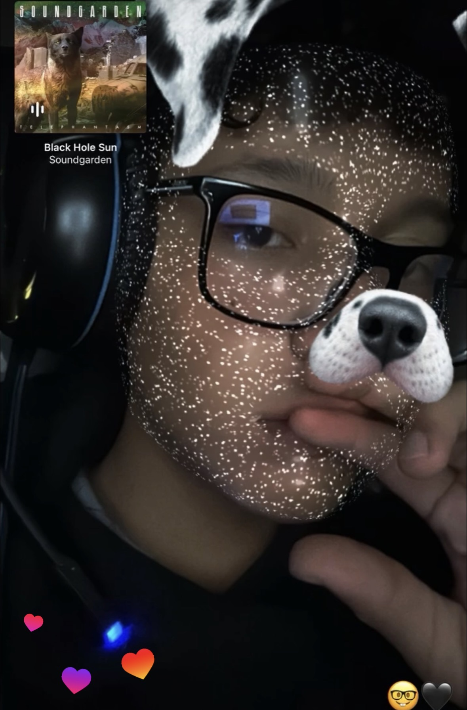
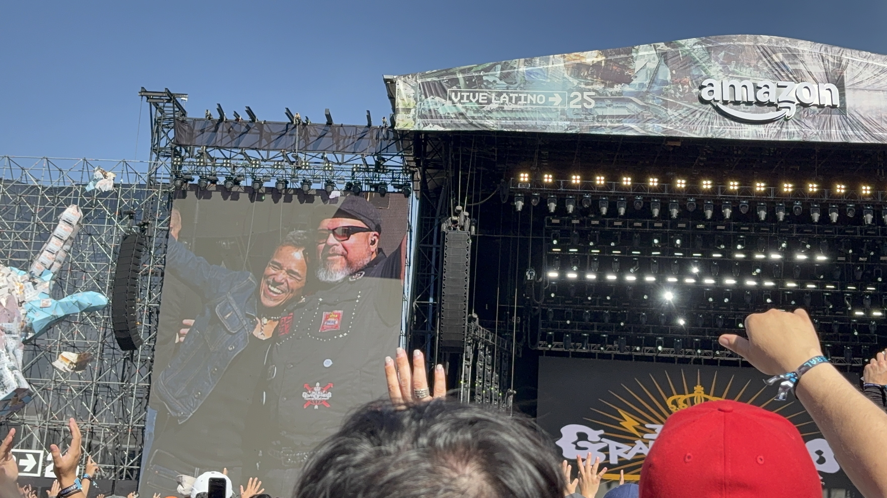
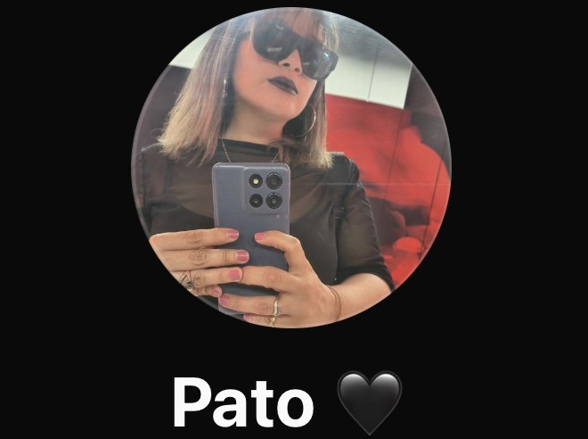
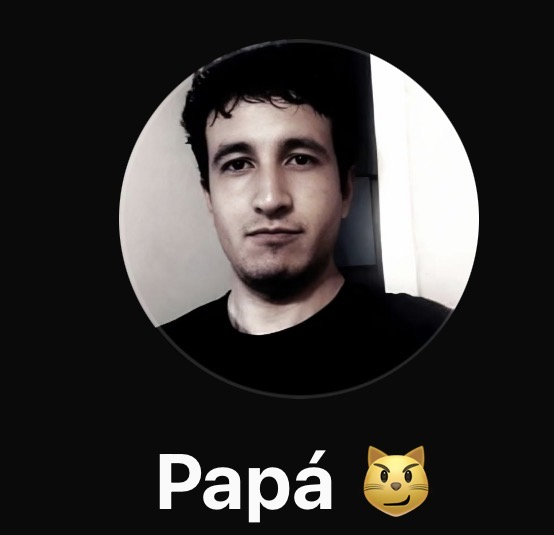
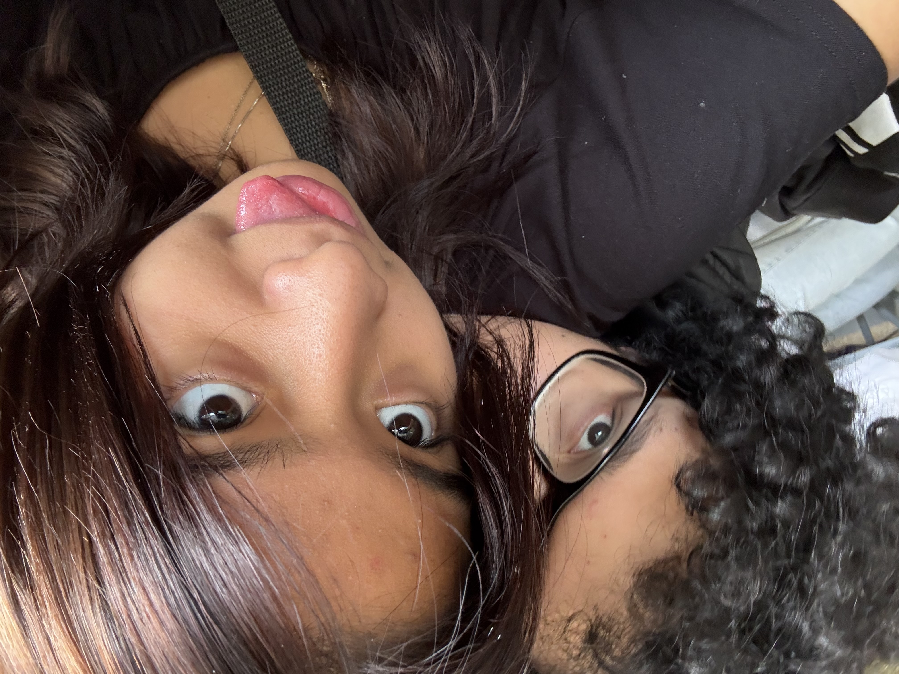
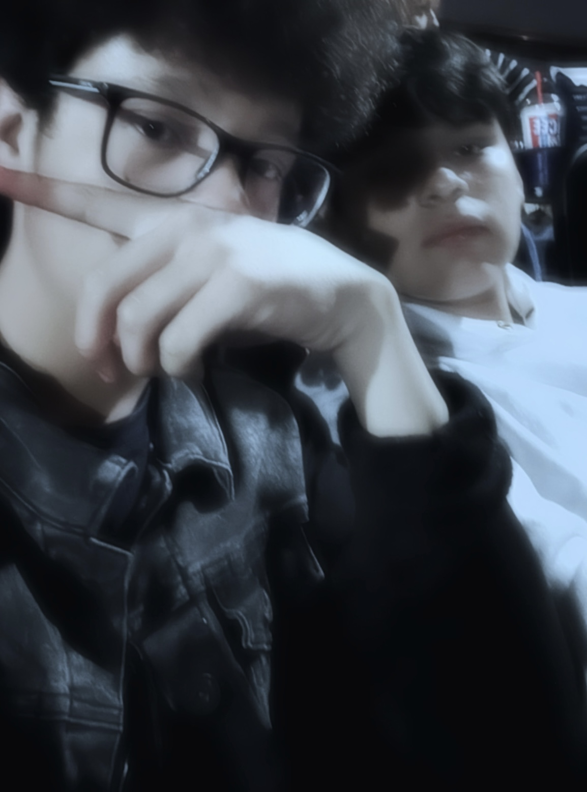
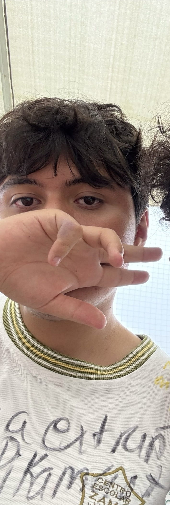
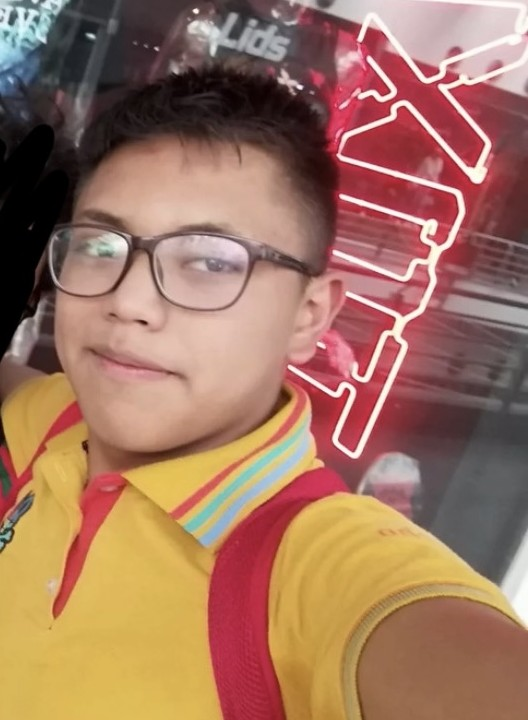

Mi nombre es Edgar Fernando Manrique Marín, soy el autor de esta página web... yo soy un chico que le gusta la música (tanto ir a conciertos o tocar yo mismo los intrumentos musicales), me gusta el box, la lucha libre, el fútbol, etc. Como estudiante suelo ser dedicado y me intereso por aprender todo los temas, donde me interesa comprender el funcionamiento de mis alrededores. Suelo ser tímido pero a su vez amable con los demás, cuando se trata de mi familia o seres queridos, yo hago todo lo que es de mi alcance para ayudarlos.
Mi familia (en especial mi padre y mi madre), son un pilar muy esencial, ya que no solamente me apoyan económicamente, sino que al igual apoyan emocionalmente y en cuestiones personales. Mi familia paterna es con la que más suelo convivir y, junto con la materna, me ayudaría sin cuestionarlo... todos somos muy unidos, independientemente si es necesario o no, todos se apoyan entre todos.



Mi novia ha sido, al igual que el caso anterior, un pilar muy importante en cuestion sentimental y personal, siempre que la necesito esta ahí y es lo que siempre he deseado, su apoyo me ha ayudado muchas veces, a pesar de los problemas que han pasado en la vida diaria, hemos logrado resolver todo y continuar con normalidad, contruyendo un futuro deseado juntos cada día de la mano.
Desde mucho antes de entrar a la escuela tenía amigos, los cuales a la mayoría les sigo hablando. En la preparatoria he conocido a otros que, a pesar del corto tiempo que he platicado con ellos, se que me podrían apoyar en diversas cuestiones de forma positva, cosa que agradezco tener hoy y probablemente (espero) en el futuro en el ámbito profesional.


